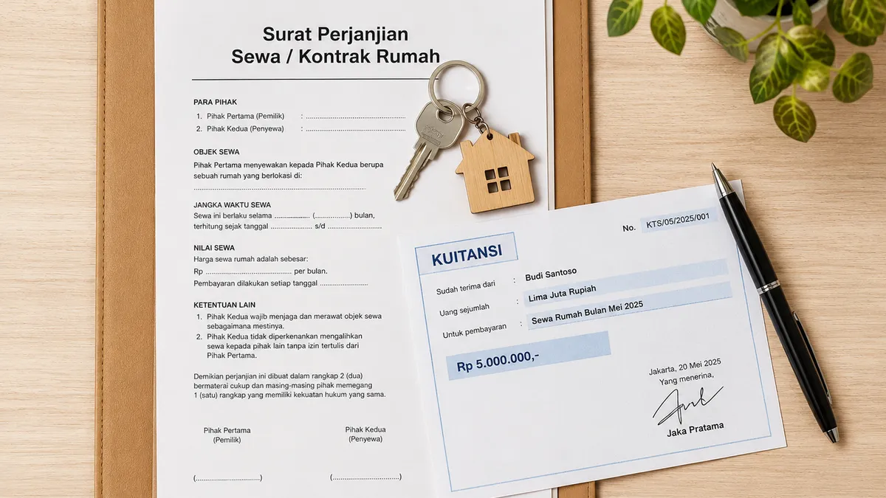

Banyak calon nasabah yang mengurungkan niat mengajukan pinjaman dana tunai karena merasa minder atau takut ditolak akibat status tempat tinggal mereka yang masih menyewa atau mengontrak. Ada anggapan keliru bahwa perusahaan leasing hanya menerima nasabah yang memiliki rumah pribadi milik sendiri.
Faktanya tidak demikian! BFI Finance sangat memahami kebutuhan finansial Anda dan tetap berkomitmen memberikan akses modal kerja atau dana darurat bagi siapa saja, asalkan risiko kredit dapat terukur dengan baik.
Agar proses kedatangan tim surveyor berjalan mulus dan status pengajuan gadai BPKB mobil Anda langsung berstatus APPROVED (Disetujui), terapkan 5 trik rahasia di bawah ini:
1. Siapkan Bukti Kuitansi Sewa Kontrak yang Masih Aktif
Pihak analis kredit membutuhkan kepastian bahwa Anda akan tinggal di lokasi tersebut dalam jangka waktu yang jelas selama masa angsuran. Jika rumah Anda kontrak tahunan atau bulanan, siapkan dokumen perjanjian sewa atau minimal kuitansi pembayaran terakhir yang sah. Hal ini membuktikan bahwa Anda adalah nasabah yang kooperatif dan menetap dengan jelas.
2. Sertakan Dokumen Penjamin Tambahan (Jika Diperlukan)
Jika masa kontrak rumah Anda tinggal menyisakan beberapa bulan saja, Anda bisa meningkatkan skor kredit Anda secara drastis dengan menyertakan penjamin. Penjamin terbaik bisa berupa pasangan (suami/istri), orang tua kandung, atau saudara kandung yang memiliki riwayat pekerjaan menetap atau berdomisili di kota yang sama.

3. Tunjukkan Rekening Koran atau Bukti Penghasilan yang Kuat
Bagi analis keuangan, status rumah kontrak bukanlah masalah besar selama Anda memiliki kemampuan bayar (repayment capacity) yang sehat. Tunjukkan transparansi keuangan Anda dengan menyiapkan slip gaji 3 bulan terakhir atau nota-nota usaha dagang yang rapi beserta mutasi tabungan. Jika perputaran uang di tabungan Anda terlihat aktif dan stabil, peluang disetujui akan naik hingga 90%.
4. Pastikan Fisik Kendaraan Bersih dan Layak Jalan saat Survei
Ingat, aset utama yang Anda jaminkan adalah dokumen BPKB mobil. Oleh karena itu, kondisi mobil Anda adalah penentu plafon pencairan dana. Saat surveyor datang melakukan gesek nomor rangka dan nomor mesin, pastikan kondisi mobil Anda dalam keadaan bersih, mesin mudah dinyalakan, dan tidak dalam kondisi rusak berat akibat kecelakaan besar.
5. Berikan Informasi yang Jujur dan Terbuka Saat Wawancara
Kunci terbesar dari kelolosan survei adalah kepercayaan. Ketika surveyor menanyakan tujuan penggunaan dana atau detail pekerjaan Anda, jawablah secara jujur, tenang, dan meyakinkan. Tim kami bertugas untuk membantu mencarikan solusi finansial, bukan untuk mencari-cari kesalahan nasabah.
Catatan Penting: BFI Finance adalah lembaga resmi yang terdaftar dan diawasi oleh Otoritas Jasa Keuangan (OJK). Seluruh data identitas serta dokumen kendaraan Anda dijamin aman 100% di dalam sistem internal kami. Mobil tetap bisa Anda gunakan sehari-hari untuk operasional kerja karena kami hanya menyimpan BPKB-nya saja.
Kesimpulan
Jangan biarkan status rumah kontrak membatasi langkah Anda dalam mengembangkan usaha atau memenuhi kebutuhan mendesak. Dengan persiapan dokumen yang matang seperti panduan di atas, pintu pencairan dana segar melalui BFI Finance terbuka sangat lebar bagi Anda.